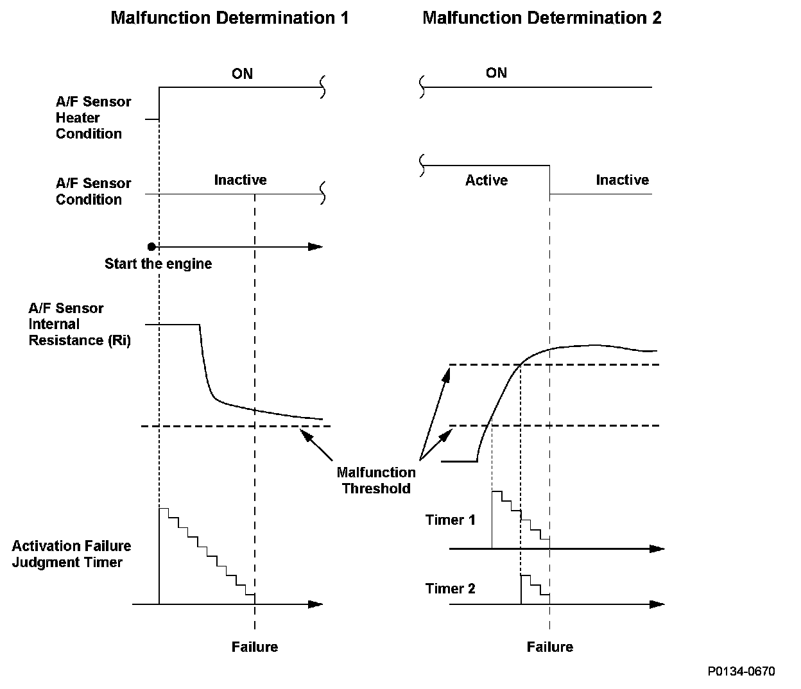
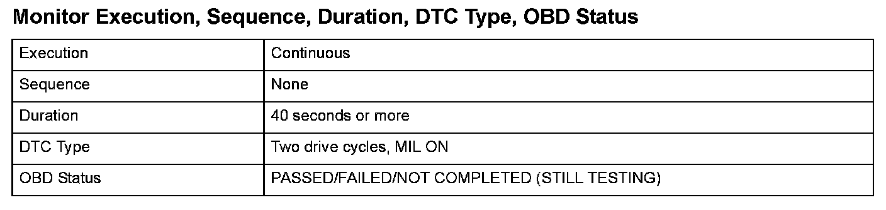
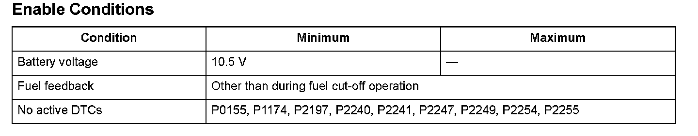

Advanced Diagnostics
DTC P0154: Front Air/Fuel Ratio (A/F) Sensor (Bank 2, Sensor 1) Heater System Malfunction
General Description
The front air/fuel ratio (A/F) sensor (bank 2, sensor 1) is activated by warming the element with the heater and by maintaining it at a steady high temperature to accurately calculate the air/fuel (A/F) ratio. The front A/F sensor does not become active when the element is not properly heated due to a heater malfunction, and the exhaust emissions deteriorate. The powertrain control module (PCM) monitors the front A/F sensor internal resistance.
1. When the front A/F sensor does not activate within a set time after the front A/F sensor heater starts to warm up (with high front A/F sensor internal resistance), a malfunction of the front A/F sensor heater is detected, and a DTC is stored.
2. When the front A/F sensor heater cycles ON and OFF within a set time, and the resistance remains high when the heater is ON, a malfunction in the front A/F sensor heater is detected, and a DTC is stored.
Because the effect on engine control differs according to the front A/F sensor internal resistance, there are two types of malfunction detection threshold levels. When either one is reached, a malfunction is detected.

Monitor Execution, Sequence, Duration, DTC Type, OBD Status

Enable Conditions
Malfunction Threshold
Malfunction determination 1
The front A/F sensor (bank 2, sensor 1) heater internal resistance value is 110 ohms or more for at least 40 seconds right after the engine starts.
Malfunction determination 2
- The front A/F sensor (bank 2, sensor 1) heater internal resistance value is 110 ohms or more for at least 15 seconds.
- The front A/F sensor (bank 2, sensor 1) heater internal resistance value is 200 ohms or more for at least 1 second.
Driving Pattern
Start the engine, and let it idle for at least 1 minute.
Diagnosis Details
Conditions for illuminating the MIL
When a malfunction is detected during the first drive cycle, a Temporary DTC is stored in the PCM memory. If the malfunction recurs during the next (second) drive cycle, the MIL comes on and the DTC and the freeze frame data are stored.
Conditions for clearing the MIL
The MIL will be cleared if the malfunction does not recur during three consecutive trips in which the diagnostic runs.
The MIL, the DTC, the Temporary DTC, and the freeze frame data can be cleared by using the scan tool Clear command or by disconnecting the battery.